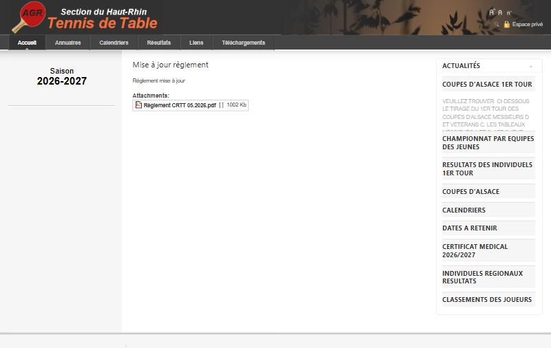
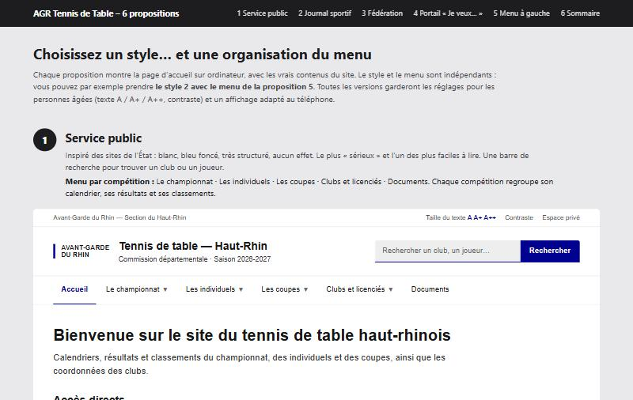
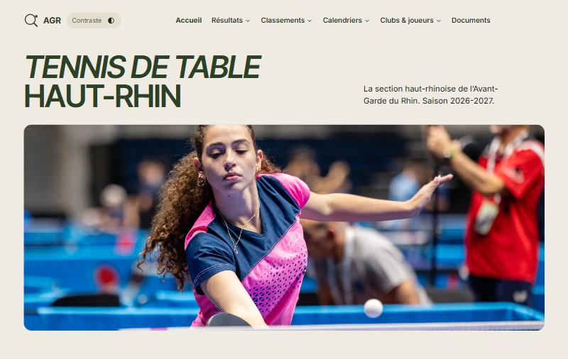
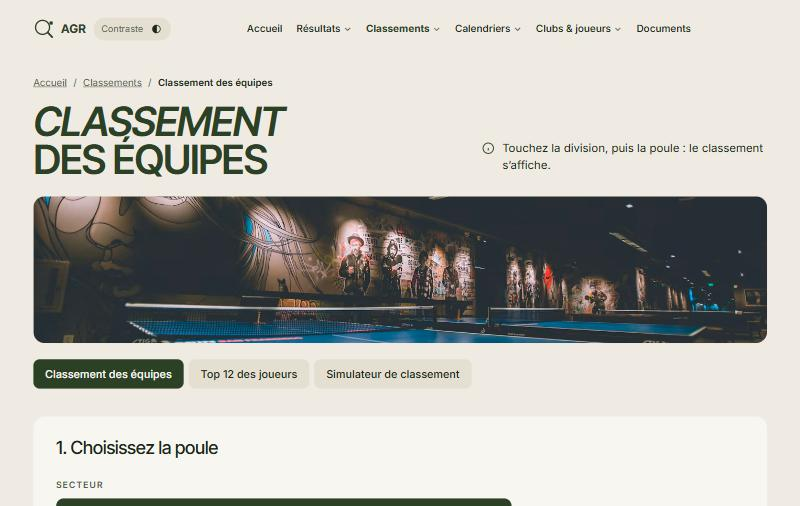
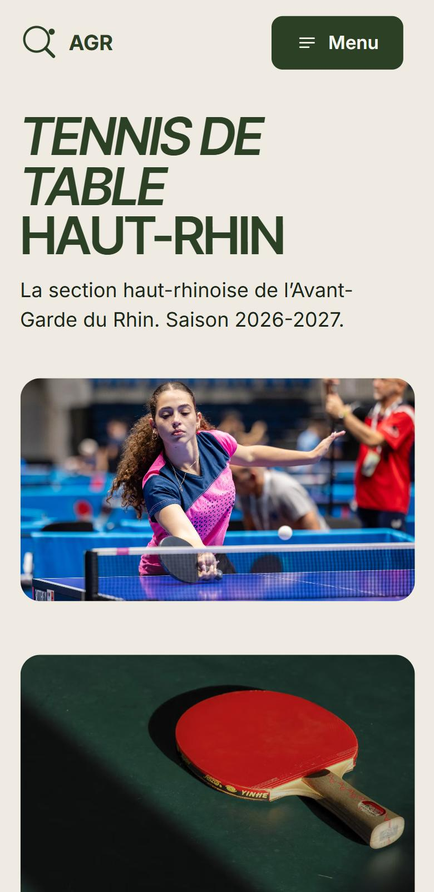

Refonte du site du tennis de table haut-rhinois
J'ai entièrement repensé l'apparence et la navigation du site de l'AGR Tennis de Table du Haut-Rhin, puis je l'ai rendue utilisable tout de suite sous forme d'extension Chrome, sans toucher au site lui-même. J'ai ensuite proposé mon travail au responsable du site. Ma proposition n'a pas été retenue, une autre personne travaillant déjà sur le sujet, mais la démarche m'a appris à présenter un projet à un vrai décideur.
- Cadre
- Projet personnel, réalisé de ma propre initiative
- Dates
- Octobre 2026
- Équipe
- Seul
- Technologies
- HTML, CSS, JavaScript, extension Chrome (Manifest V3), Python pour les outils de test
- Lien
- Site d'origine : agr-tt.fr · Extension, maquette et propositions sur GitHub
Pourquoi ce projet
Le site du comité départemental de tennis de table publie les calendriers, résultats et classements de toute la saison. L'information est là, mais difficile à trouver : menus peu explicites, petits caractères, pages pensées uniquement pour un écran d'ordinateur. Or une partie de ses visiteurs sont des personnes âgées, et beaucoup consultent les résultats depuis leur téléphone.

Ma démarche
- Six propositions de design, toutes construites avec les vrais contenus du site : style « service public », « journal sportif », « fédération », portail « Je veux… »… Le style et l'organisation du menu étaient indépendants, pour pouvoir les combiner.
- Une maquette de cinq pages (accueil, actualité, résultats, classement, documents) dans la direction retenue : fond beige, vert forêt, grands titres, vraies photos.
- Une extension Chrome qui applique cette nouvelle présentation directement sur le vrai site.
- Une prise de contact avec le responsable du site pour lui proposer de refaire réellement son apparence.

Le résultat

- Un menu par type d'information : Résultats, Classements, Calendriers, Clubs et joueurs, Documents.
- Une consigne en une phrase en haut de chaque page, par exemple « Touchez la division, puis la poule : le classement s'affiche ».
- Des menus déroulants en cascade transformés en étapes à déplier d'un clic, et des tableaux de résultats qui défilent au lieu de déborder.
- Lisibilité : texte de 18 pixels minimum, mode contraste renforcé, bouton « Haut de page ».
- Affichage adapté au téléphone, avec tout le menu regroupé derrière un bouton.


Défis techniques et solutions
Refaire un site sans avoir accès à son serveur
Je n'avais aucun accès au code du site. L'extension s'exécute donc dans le navigateur : elle masque la page d'origine dès son chargement, lit son contenu réel (actualités, articles, documents) et reconstruit la page selon la maquette. Rien n'est modifié sur le serveur, et un simple interrupteur réaffiche le site d'origine.
Rester à jour sans jamais mettre l'extension à jour
Si l'extension recopiait le contenu, elle serait périmée dès la première actualité publiée. Tout est donc lu sur le site à chaque visite. Les menus sont relus à chaque page et vérifiés en entier une fois par jour : une page ajoutée au site apparaît d'elle-même dans la bonne rubrique, une page supprimée disparaît.
Adapter des pages que je ne contrôle pas
Les résultats, classements et calendriers sont des pages séparées, affichées dans des cadres. L'extension agit aussi à l'intérieur de ces cadres : elle transforme les listes déroulantes en étapes, rend les tableaux défilants et ajuste automatiquement la hauteur du cadre à son contenu.
Tester sans réinstaller l'extension à chaque modification
J'ai écrit un petit serveur relais en Python qui affiche le vrai site en local en y injectant les fichiers de l'extension, avec une imitation du stockage de Chrome. J'ai aussi codé en JavaScript un générateur d'illustrations en style « low poly » (triangulation de Delaunay) pour fabriquer certaines images de la maquette.
Avec le recul : ce que je ferais autrement
- Contacter le responsable avant de développer. J'ai présenté un projet abouti à quelqu'un qui avait déjà lancé une refonte. Un premier échange avec les propositions de design m'aurait appris la situation plus tôt, et m'aurait peut-être permis de contribuer au projet existant plutôt que d'en mener un en parallèle.
- Choisir un support adapté au public visé. Une extension doit être installée, et uniquement sur ordinateur : elle ne touche donc ni les personnes âgées peu à l'aise avec l'informatique, ni les utilisateurs sur téléphone, pour qui j'avais pourtant conçu l'affichage mobile. Elle reste une très bonne démonstration, mais la vraie solution serait un nouveau thème installé directement sur le site.
- Moins dépendre de la structure du site d'origine. L'extension lit les pages existantes pour les reconstruire : si le site change sa présentation, elle peut cesser de fonctionner. Je regrouperais toute cette lecture à un seul endroit du code, pour qu'une modification du site ne demande qu'une correction.
Ce que ce projet m'a appris
- Concevoir pour un public précis : ici des personnes souvent âgées, qui veulent trouver un résultat en quelques secondes.
- Proposer plusieurs pistes avant d'en développer une, pour laisser le choix au décideur.
- Le fonctionnement d'une extension de navigateur et la manipulation d'une page web existante en JavaScript.
- Aller au bout d'une démarche, jusqu'à présenter mon travail à quelqu'un qui pouvait l'adopter, et accepter un refus.
Photos de la maquette : Unsplash et Pexels (Anat Landa, Oliver Wagenblatt, Ben Sauer, Marcus Clark, Jure Zakotnik, Conor Samuel, Maximilian Bungart, Nicholas Ismael Martinez, Nathanaël Desmeules, Ivan Cortez, Yanhao Fang, Lisa Keffer).